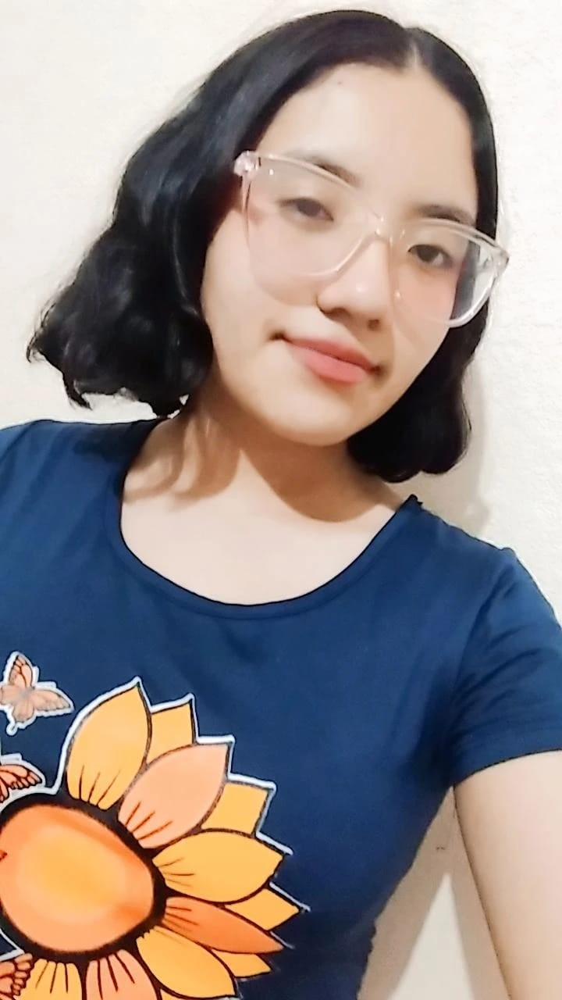
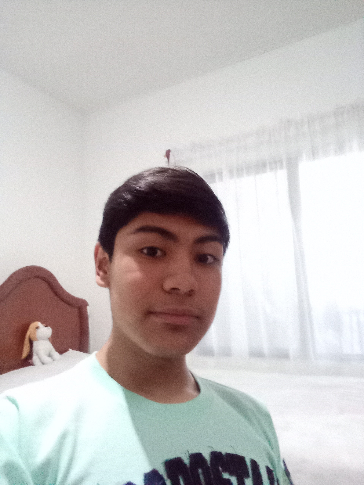
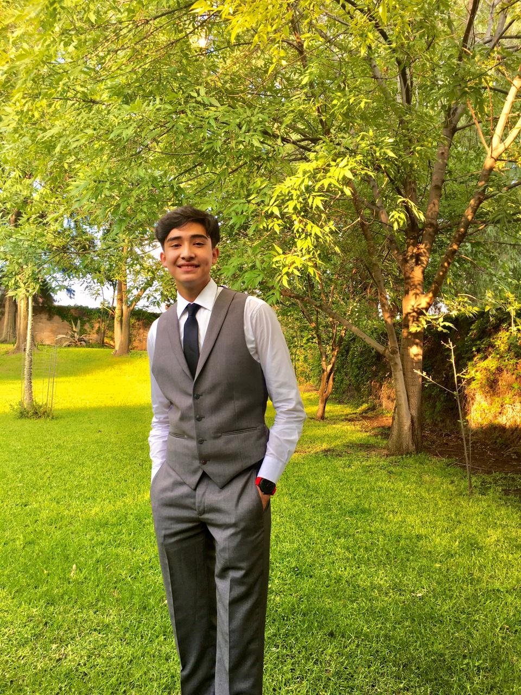

Consultar:
Tema 1
Tema 2
Tema 3
Tema 4
Formulario
Biografias

Mi nombre es Flor Belén Terán Soto, nací el 18 de Junio de 2005 en los Mochis, Sinaloa.
Vivo con mi familia, la cual está conformada por 5 integrantes, mis padres y mis hermanas,
yo soy la hermana mayor. Me gusta mucho dibujar, cantar y bailar. Estudie en la
secundaria general 5 e ingrese al cbtis65 en la especialidad de programación porque me
llamaba la atención, quería aprender todo lo que se hace para programar aplicaciones,
páginas web y juegos. Ahorita estoy interesada en estudiar odontología o diseño gráfico,
la verdad no la hago mucho para programadora.

Mi nombre es Javier Oswaldo Luna Mendoza, nací un 12 de octubre de 2005, soy originario de
Irapuato, GTO. donde he vivido toda mi vida. Por parte de la secundaria aprende electrónica y
para los últimos meses nos enseñaron un poco de programación la cual sería clave para elegir
la especialidad de programación. Hay tres cosas las cuales me apasionan, la primera es la
música, la segunda los videojuegos y la tercera ensamblar computadoras desde cero. Uno de
mis más grandes sueños es poder ser compositor de la banda sonora de un videojuego y esa
sería la principal razón por la que estoy estudiando programación, para poder tener más
chances de poder completar mi sueño.

Hola, me presento. Soy Luis Antonio Ortiz Zárate, nací el 10 de Junio del 2005 en
la ciudad de Irapuato Gto. Actualmente tengo 16 años, curso el 4to semestre de
programación en la prepa CBTIS 65. Soy un poco sociable, siempre me gusta
estar con mis amigos personales, no me gusta conocer gente, socializo muy
rápido con ellas pero no es mi fuerte. Actualmente tengo pareja ya casi con un año
de relación. Me gustaría empezar una carrera de Ingeniería Industrial en el ITESI,
estoy muy agradecido con mi familia, no es la perfecta por muchos defectos, pero
agradezco de tener una familia tan feliz.
Volver a la pagina principal